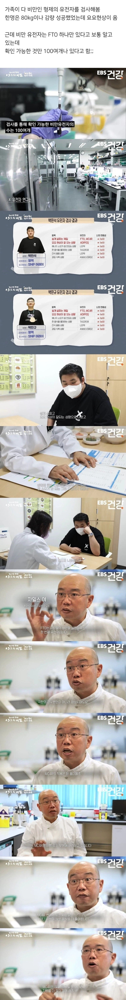
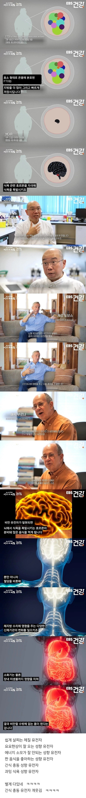

2040년부터 인류멸망 시작한다니까 얼마 안남음
문명이 너무 빨리 변했어
???: 노력을 안 하고 운동을 안 하고 식욕 절제를 못 하는 정신병자들이라 그래!
지능도 유전자에서 오는건데 뭐.
성격도 유전자빨 채질도 유전자빨
다른곳 뭐 북한에선 고난의 행군으로 사람죽은지 30년 됐나
우리나라도 결식아동 있고 했을때가 80년대?쯤 이였을 테니 ㅋㅋ 시대를 살짝 잘못만남
쯔양도 원래는 안그랬을텐데 미성년자때 존나 먹어서 장이 성장하거나 적응한듯
쯔양은 먹고싶은 유전자 위가늘어나는유전자 이런거에 살안찌는 유전자도있나봄
캠브리지대 유전학과 교수님도 해결못하는 탈모유전 ㅜ
근데 간식충동 유전자 나 있는거같아 넘 힘들어 과자참기 ㅜㅜ
저 유전자만 존나 나노로봇이 싹뚝해주면 안되냐?
노력과 의지가 아니었어?
쯔양도 의지로 먹고 소화시키는거 아니었음?
쯔양은 의지와 노력+군것질 안하고 삼시세끼 규칙적인 식단관리로 살이 안찐대!!
역시 돼지들은 노력이 부족했던 거였음!!
저는 삼시세끼규칙적으로 2400kcal 먹으면 살쪄서 800kcal 한끼만먹음 ㅇ
빙하기에 살았으면 잘살았을텐데
뭐 하라는것도 아니고 안먹으면 되는건데 그게 제어가 안된다하면
성욕 감당못해서 성폭행했다랑 동급.
비만은 질병입니다.
뭔씨발 비유진짜 좆같이하네 비만이 범죄냐?ㅋㅋ
여기 또 과학이랑 싸우려는 인간 있네 ㅋㅋㅋㅋㅋㅋ
이런 댓글을 참지 못하고 과학을 전면 부정하는게 질병같은데
이런애들이 까보면 흡연충임
악플을 못참는 유전자가있는 친구
연구를 부정하는 반지성 유전자
이런 대가리를 물려주는 것도 유전이긴함
통제를 못하니까 질병인 거야;
저지능도 질병에 넣어야것네.... 애 안낳을거지?
비유를 넣으려면 성욕 감당못해서 딸잡는 애들하고 비교를 해야 맞지않겠냐?
돼지들이 식욕 못 참아서 길가 편의점 강도질하는건 아니잖아
비유가 븅신인데
그럼 성폭행도 질병이니까 감형해주리?
에너지 소모가 잘 안되는 성향? 이거 원시시대엔 고트급 유전자 아니냐
조선시대엔 다 말랐는데 유전자 어디서옴
그땐 먹을게없었고 먹어도 농사일하느라 칼로리 다 소모돼서 유전자 발현이안된듯 저 위에도 있네 저 유전자랑 현대의 식품환경이 합쳐져서 비만이생긴것같다고
이글은 올라올 때마다 댓글 반응이 똑같아서 데자뷰 같음...
결론은 자식 생각하면 비만인과 결혼하지 마라
인류를 위한 내 선택이 옳았군. 내 의지로 사람들과 멀어진거야.. 그래...
저지능자랑도 결혼은 하면안될거같아 ㅇㅇ
뚱뚱이들 짜증나
뚱뚱한 집안
마른 집안이라는게 진짜 있음 ㅇㅇㅇ
위기상황이 닥치면 저 유전자 중에 몇 놈만 살아남는겨
나도 다 이해되는데 그런 유전자있다해도 관리하면서 건강하게 뚱뚱한거면 이해하는데 관리 아예안하면서 난 절대 살 안빠져 하면서 먹기만하는애들은 이해가안되더라 무게는 같이도 근육량이 늘고 체지방률이 조금이라도 낮아지는게 얼마나 큰 차이인데
지방을 먹어서 지방이 쌓이는게 아니고
탄수화물이 지방으로 저장되는거야
인류 역사상 99.9%세월동안 우수한 유전자였는데 ㅠㅠ
그럼 식량을 전부 없애서 인류 대기근을 만들어야
선천적 비만유전자는 후천적비만보다 대사증후군에 내성같은게 존재할려나?.
오 나도 검사 받아보고 싶다
난 ENFP인데
이래서 위고비 마운자가 필요한건가
나도 남들보다 쉽게 살찌는 편이라 유전적 차이가 있다는 것 자체는 이해함. 근데 살찌기 쉬운 유전자라 어쩔 수 없다는건 이해가 안됨
나도 쉽게 찐다는 걸 아니까 운동하고 관리하면서 사는데
, 유전자가 불리하다는게 관리해도 소용없다는 의미는 아니잔ㄹ음?
유전적 요인이 지금 모습에 영향을 줄 수는 있어도 본인의 모든 행동과 선택까지 결정하는건 아니지 않나?
돼지되기싫으면 평생 운동하나 가져가야함
꾸준한 운동으로 어느정도 근육량을 만들어놓고 계속 에너지를 사용하고
건강한식습관을 가져가는거지 평생
비만유전자를 가졌기때문에 불리한거지 불가능하다곤 안했음
난안될거야 난못해라고 주저앉으면 한도끝도없음
근데 혁준이보면 그냥 사는게 행복할수도
생존에 대단한 재능이 있는 유전자인데
시대를 잘못 만났어